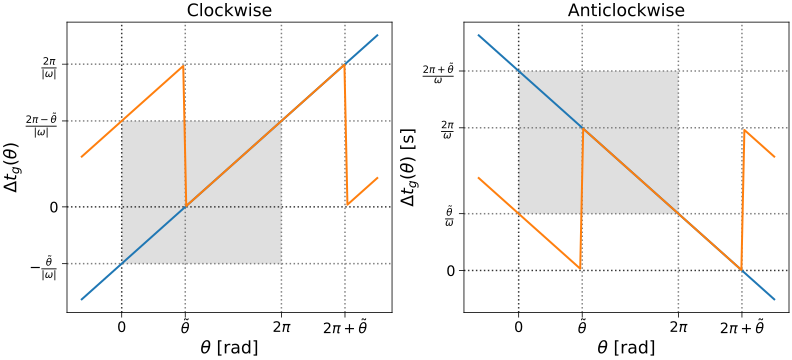
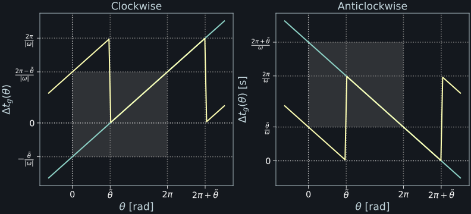
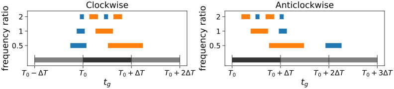
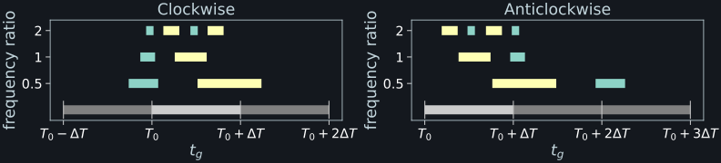

scippneutron.chopper.disk_chopper#
Tools for disk choppers.
Definitions
The names used here correspond closely to the names used by NeXus’ NXdisk_chopper.
See https://manual.nexusformat.org/classes/base_classes/NXdisk_chopper.html
for an overview.
Here is how those attributes are interpreted in ScippNeutron: The image below shows a disk chopper with a single slit as seen from the neutron source looking towards the sample. Note that all definitions are independent of the rotation direction.
Name |
Symbol |
Definition |
|---|---|---|
|
\(t_0\) |
Choppers typically have a top-dead-center (TDC) sensor that tracks the rotation of the chopper. The sensor emits a timestamp when a chosen part of the chopper disk passes by. This part of the disk serves as a reference point for defining angles; it is marked as ‘TDC’ in the image below. The emitted timestamps are stored in the |
|
\(\tilde{\theta}\) |
The angle under which the beam hits the chopper
( |
slit_beginslit_end |
Slits are defined in terms of begin ( |
|
|
\(f\) |
The rotation frequency of the chopper.
Stored in |
|
\(\omega\) |
\(\omega = 2 \pi f\), |
|
\(\delta t\) |
Delay of the chopper timing system relative to global facility time with \(t_g = t + \delta t\), where \(t_g\) is a global time and \(t\) a chopper time. |
|
\(\phi\) |
The phase of the chopper relative to the pulse time.
Defined as \(\phi = \omega (t_0 + \delta t - T_0)\), see below for
the explanation.
( |
|
\(T_0\) |
Timestamp of a neutron pulse in global facility time. |
{kind=link}
DiskChopper expects the chopper to be in phase with the source.
It thus requires a constant rotation speed which must be an integer
multiple of the source frequency or vice versa.
The phase should be computed as defined about from the difference of a pulse time
and a corresponding TDC timestamp.
The user is responsible for determining the correct times.
Slit openings
The terminology here differentiates slit ‘begin’ and ‘end’ from ‘open’ and ‘close’. The former refer to the angles relative to TDC as shown in the image above. The latter refer to the times when a slit opens and closes for the beam.
It is possible to have end > 360 deg if a slit spans TDC.
For a given slit, we require begin < end.
To also have open < close for both directions of rotation,
we have the following correspondence:
clockwise rotation:
begin<->openandend<->closeanticlockwise rotation:
begin<->closeandend<->open
Time calculations
Given the definitions above, the time in the global timing system when a point at angle \(\theta\) is at the beam position is
where the second line uses that, for clockwise rotation, \(|\omega| = -\omega\) and for anticlockwise, \(|\omega| = \omega\). This can be converted to a time offset from a pulse time \(T_0\) using
where \(\phi = \omega (t_0 + \delta t - T_0)\) is the phase.
DiskChopper.time_offset_angle_at_beam() can calculate \(\Delta t_g(\theta)\)
and DiskChopper.time_offset_open() DiskChopper.time_offset_close() calculate
\(\Delta t_g\) for slit open and close times.
The definitions used here can lead to surprising results. The plots below show the computed times for an angle \(\theta\) for \(\tilde{\theta} \neq 0\) and \(\phi = 0\) (blue lines). Note in particular the time ranges for \(\theta \in [0, 2\pi)\) (gray rectangles). The other lines show \(\Delta t_g \,\mathsf{mod}\, 1/f\) which is an option for restricting the times onto \([0, \frac{2\pi}{|\omega|}) = [0, \frac1{f})\).
 {kind=link}
{kind=link}
DiskChopper.time_offset_open() and DiskChopper.time_offset_close()
compute \(\Delta t_g\) for the slit edges.
The resulting times are shown below for a chopper with two slits, a short one (blue)
and a long one (orange/yellow) with
\(\theta_\mathsf{short} < \theta_\mathsf{long}\).
Source pulses are indicated in gray.
The shown frequency ratio is frequency / pulse_frequency.
Times were computed for a pulse at \(T_0\) with length \(\Delta T\) but spill into neighboring pulses because of a nonzero beam position and phase. If those were zero, the \(\mathsf{frequency\ ratio} \geq 1\) openings would lie within \([T_0,\, T_0 + \Delta T)\) and the \(\mathsf{frequency\ ratio} = 0.5\) openings would lie within \([T_0,\, T_0 + 2\Delta T)\). Note how, for choppers that spin at a multiple of the pulse frequency, there are multiple openings per slit.
 {kind=link}
{kind=link}
Time-dependent parameters
In NeXus files, many chopper parameters are time-dependent, for example,
top_dead_center is an array of timestamps, or frequency typically
is an NXlog with speed measurements for different times.
However, for simplicity and efficiency, DiskChopper requires
time-independent quantities.
The guide on pre-processing choppers <../../user-guide/chopper/pre-processing.ipynb>
shows how to extract the required quantities.
Classes
|
A disk chopper. |
|
Type of disk chopper. |